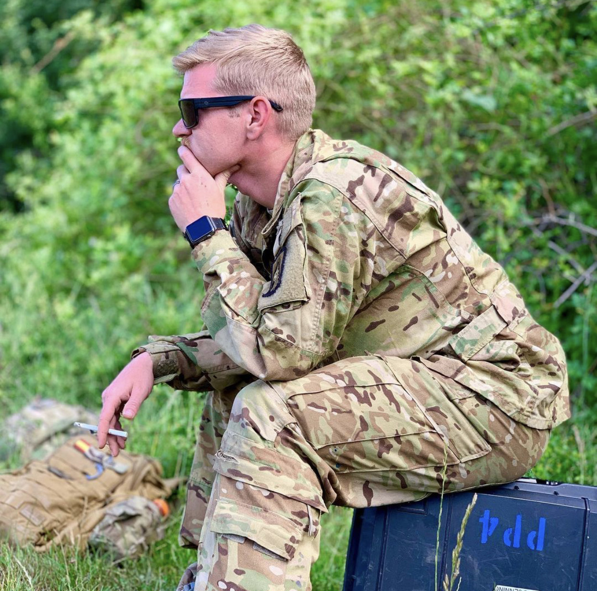
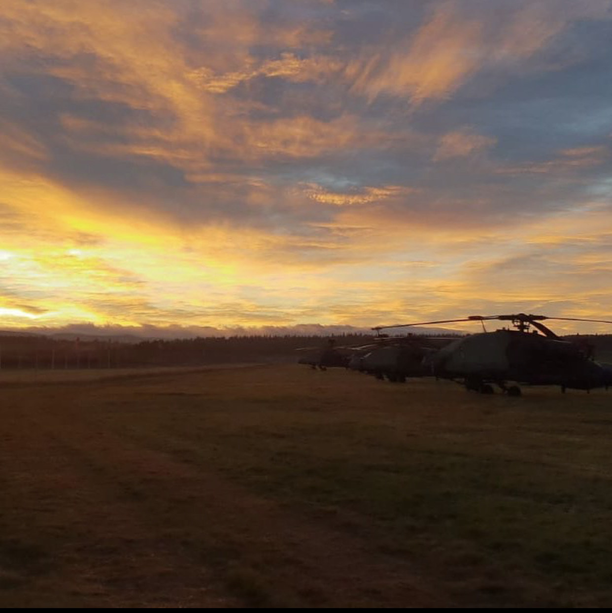

Allow me to tell you a little bit about myself.
A little about me. I am an Army veteran and Army spouse, currently living in Alabama. I spend my free time with my best friends (my dogs). If I'm not trying to keep up with them I'm playing video games on my pc, Xbox or Nintendo switch. Or maybe binge watching the most recent YouTube videos on my favorite channels. I'm a bit of an introvert but I make for some pretty decent entertainment if you can get me going. As you can see from the pictures below I love to travel and see as much of the world as possible I am an aspiring full stack developer learning the ins and outs of Java, JavaScript, Html, and Css. Trying to find my passion and purpose outside of the military.

Eipsy lake Germany

My partner and I at military ball.

A candid photo of me in Romaina

The sun setting over our AH-64 Apaches in Norway

My partner and I at harry Potter World London

The Thames and an under maintenance Big Ben from the top of the London Eye.
These photos are all my personal pictures, taken through my travels. They tell a brief snippet of my story. I may no longer be in the military. I may not still live in Germany. I also may not get out as much as I used to. I still live a fulfilling life viewing the world from a different perspective.
The first photo is of Eibsee lake in Germany on the Austrian boarder. This was my partner and I’s first real trip in Europe. It had the most beautiful blue water you could ever hope to see. Next we have a photo of me taken by a friend as I waited patiently to see off the aircraft so I could get the heck out of Romania. I was assisting in an annual NATO training mission. Training missions were the biggest part of my life for the three years I was in Germany. Next we have a sunset over our Apache helicopters in Norway. I had some the coolest experiences of my life on this mission. After that we have a photo of my partner and I at our Military ball. We were so fortunate to be stationed together the whole eight years I was active duty. She is obviously way cooler than me. Just look at that hat! Lastly we have two photos from London. Our very last vacation before the pandemic. The global panorama really messed up travel. First we have our trip to Harry Potter World. This is where much of the movies were filed. We got to see real life props, drink butterbeer and generally have an amazing time. I'm not the biggest HP fan but she is. So it goes without saying. It’s a big part of my life as well. Last we have a picture of the Thames from the top of the London Eye. As you can see, I love to travel and just enjoy life. We only get one, and nobody makes it out alive.